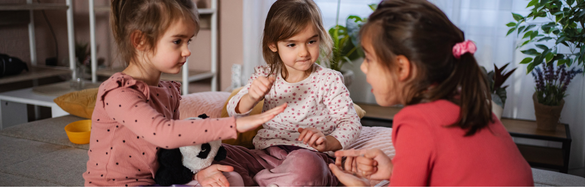
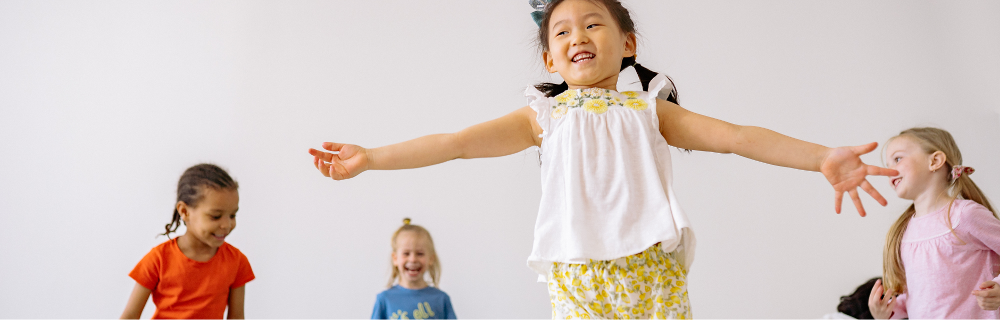

Ja, das sitzt. Vielleicht hat es dich gerade kurz getroffen — weil du solche Situationen kennst, weil du dich schon mal unwohl gefühlt hast, weil du nicht genau wusstest, wie du reagieren sollst. Wenn wir wegschauen oder vorschnell verbieten, lernen Kinder nicht Schutz. Sie lernen Scham, Unsicherheit und Sprachlosigkeit. Und genau das macht sie verletzlich.
der kindlichen Sexualentwicklung
für deinen Kita-Alltag
wenn du hinschaust statt wegschaust
Sexualentwicklung ist mehr als „Doktorspiele"
Wenn wir von Sexualentwicklung sprechen, denken viele sofort an eine Sache: Kinder, die sich gegenseitig anschauen oder berühren. Aber das ist nur ein kleiner Teil. Sexualentwicklung von 0–6 Jahren bedeutet:
- Den eigenen Körper entdecken
- Unterschiede wahrnehmen
- Nähe und Distanz erleben
- Gefühle einordnen
- Grenzen spüren und ausdrücken
- Vertrauen in den eigenen Körper entwickeln
Was in welchem Alter typisch ist — ein Überblick
| Alter | Typisches Verhalten — was normal ist |
|---|---|
| 0–2 Jahre | Körperteile entdecken, Berührungen wahrnehmen, Neugier auf den eigenen Körper |
| 2–3 Jahre | Unterschiede zwischen Mädchen und Jungen bemerken, Körperteile benennen wollen |
| 3–4 Jahre | Doktorspiele, Neugier auf Körper anderer Kinder, Fragen über Babys und Geburt |
| 4–5 Jahre | Rollenspiele mit Körperthemen, Schambewusstsein entwickelt sich, Grenzen testen |
| 5–6 Jahre | Privatheit wichtiger, Körpergrenzen bewusster erleben, Fragen über Sexualität der Erwachsenen |

Warum genau dieses Thema so sensibel ist
Vielleicht kennst du diese Gedanken:
- „Darf ich das zulassen?"
- „Ist das noch normal?"
- „Was, wenn Eltern sich beschweren?"
Und plötzlich bist du nicht mehr bei den Kindern, sondern bei deinen eigenen Unsicherheiten. Das ist menschlich. Aber Kinder brauchen etwas anderes: Klarheit statt Vermeidung. Haltung statt Schweigen.
Eine Situation aus deinem Alltag — und wie du sie wirklich gut begleitest
Zwei Kinder verschwinden in der Bauecke. Du hörst Kichern. Du gehst näher und merkst: Sie untersuchen ihre Körper. Herzklopfen. Gedankenkarussell. Eingreifen? Ignorieren? Verbieten?
Erst schauen, dann handeln
Dein erster Impuls ist wichtig, aber nicht immer richtig. Beobachte kurz:
- Sind die Kinder gleich alt?
- Wirkt es neugierig und entspannt?
- Gibt es keinen Druck oder Zwang?
Geh hin — aber ruhig und klar
Statt hektisch zu reagieren, geh bewusst in die Situation. Kein Schimpfen. Kein Beschämen. Dein Ton macht den Unterschied.
Gib klare Regeln, die Kinder verstehen
Kinder brauchen Orientierung, nicht Verbote aus Angst.
- Jede*r entscheidet über den eigenen Körper
- Niemand wird gezwungen
- Es wird nichts in Körperöffnungen gesteckt
- Es bleibt kein Geheimnis
- Je nach Konzept: Kleidung bleibt an
Sprache ist Schutz
Wenn Kinder keine Worte haben, können sie keine Grenzen setzen. Deshalb: Sag bewusst und ohne Zögern die richtigen Worte — Penis, Vulva, Po. Das fühlt sich vielleicht erstmal ungewohnt an, aber:
Stärke das „Nein" der Kinder
Wenn ein Kind sagt: „Ich will das nicht." — halte inne. Und sag:
Das ist keine Kleinigkeit. Das ist Prävention. Grenzen lernen beginnt im Alltag.

Kleine Veränderungen — große Wirkung
Du musst nicht alles sofort perfekt umsetzen. Gute Begleitung beginnt nicht mit Perfektion — sondern mit Bewusstsein. Starte heute mit drei kleinen Schritten:
Heute einmal ruhiger reagieren
Bewusst Körperteile benennen
Mit dem Team über Regeln sprechen
Und beobachte, was passiert — mit dir, mit den Kindern, mit der Atmosphäre.